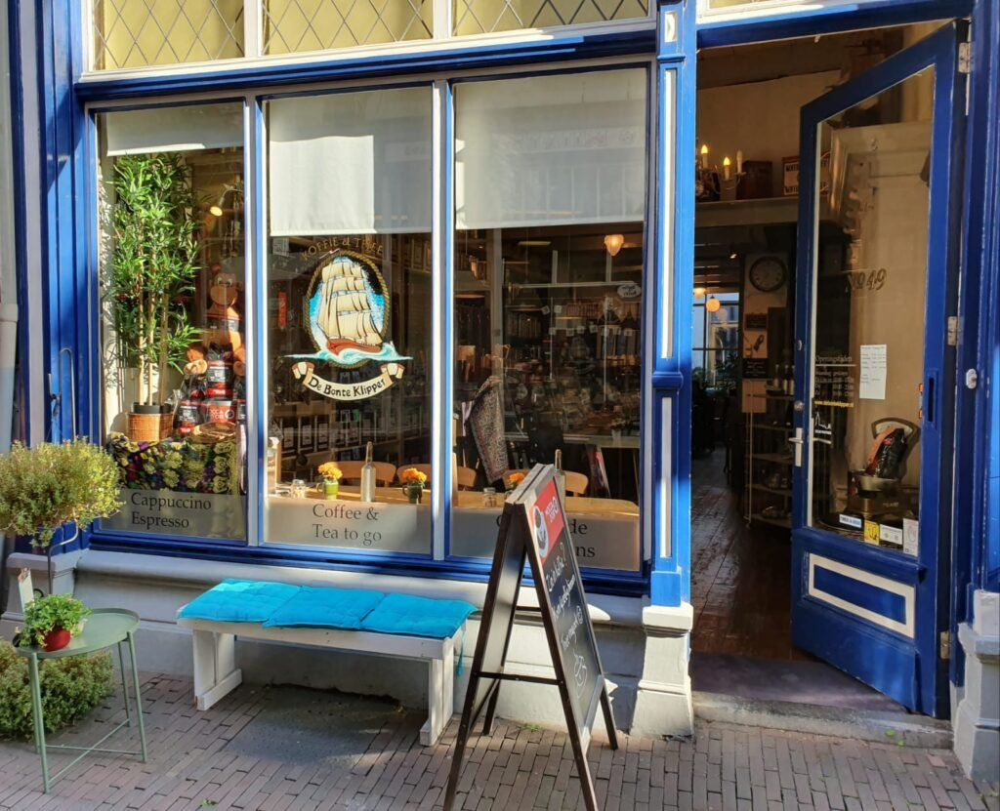
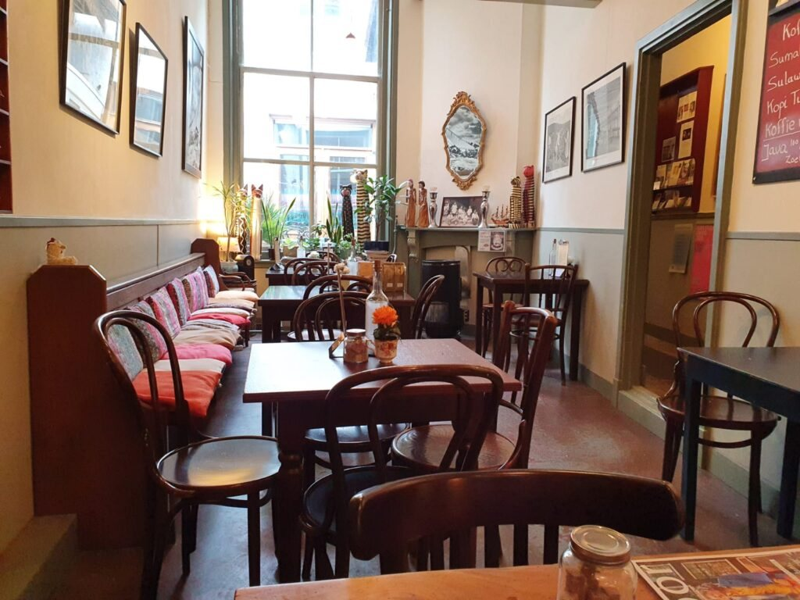
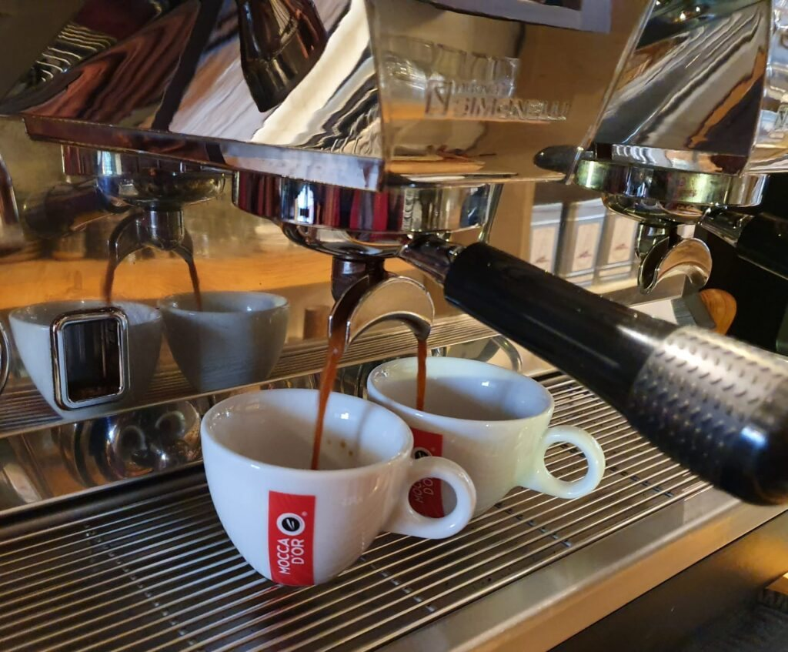
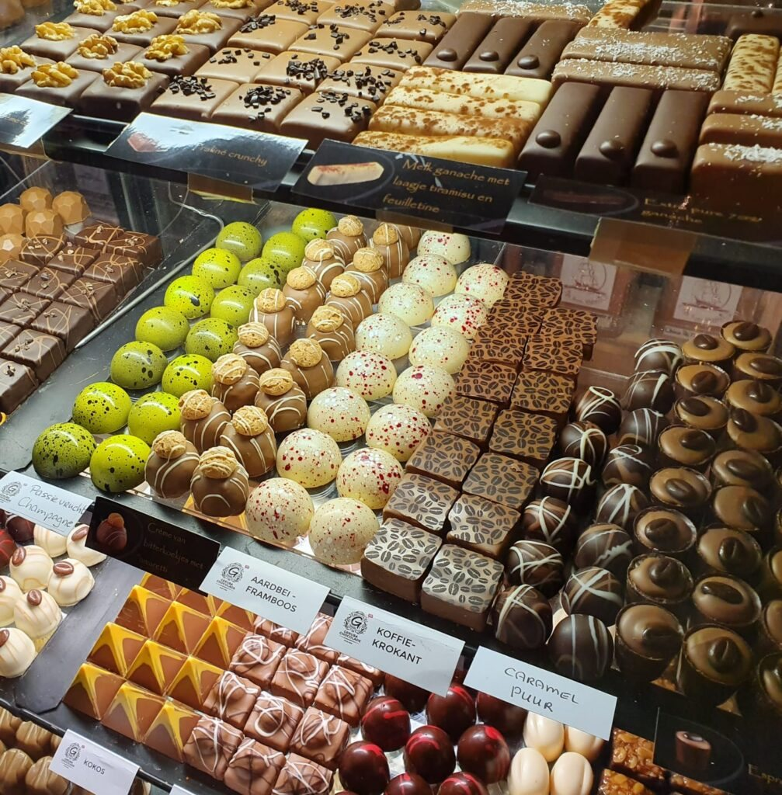
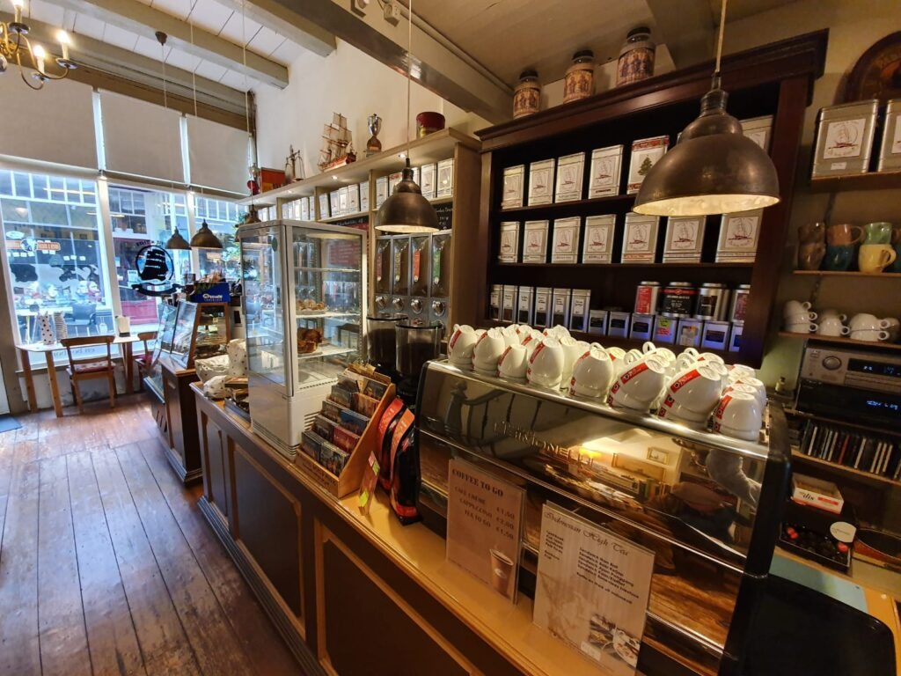
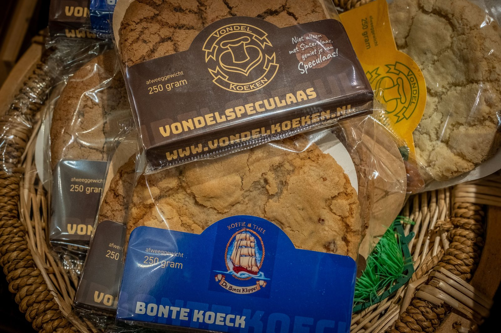

Bijzondere koffie, thee en chocolade
Een ouderwets gezellige winkel en schenkerij in het hart van Deventer. Neem een zakje mee naar huis of blijf zitten voor een kop, met een plak spekkoek erbij.
Openingstijden
Ruiken, proeven, kiezen
Achter de blauwe deur staan de wanden vol met koffie en thee uit alle windstreken. In de vitrine ligt ambachtelijke chocolade, en aan de bar staat de espressomachine aan.
Je kunt hier terecht voor een zak koffie of thee voor thuis, een doosje chocolade als cadeau, of gewoon voor een kop in de schenkerij. Afhalen kan ook, en er is een terras.


Koffie
Bijzondere koffie, vers in de kop of in een zak mee naar huis.

Chocolade
Ambachtelijk, om van te snoepen of cadeau te doen.

Thee
Een ruim assortiment uit alle windstreken, om te proeven en mee te nemen.

Een kleine reis naar Indonesië
Naast het brede assortiment heeft De Bonte Klipper speciale producten uit Indonesië. Je krijgt hier een Kopi Tubruk, of een van de andere Indonesische koffiespecials.
Daar hoort een plak spekkoek bij, gemaakt volgens een oud familierecept. Een kleine geur- en smaakreis, midden in Deventer.
Openingstijden
- Maandaggesloten
- Dinsdag10:00 – 17:00
- Woensdaggesloten
- Donderdag10:00 – 17:00
- Vrijdag10:00 – 17:00
- Zaterdag10:00 – 17:00
- Zondaggesloten